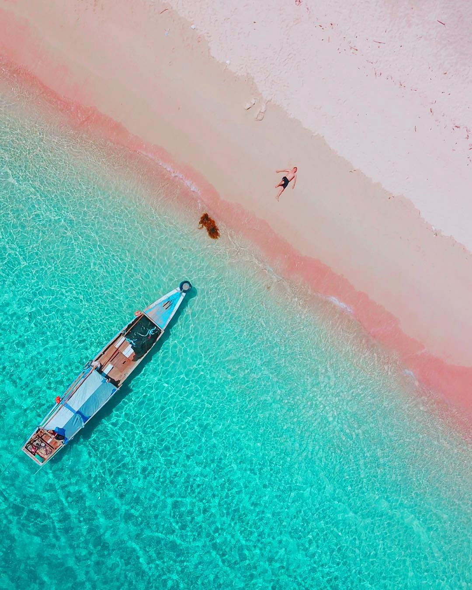

Pantai Pink
Post by dayat, Sunday 06 Juny 2018
Ada satu pantai di Lombok yang dinamai dengan Pantai Pink yang nama aslinya Pantai Tangsi. Karena sampai saat ini belum kesampaian ke Pantai Pink yang terkenal di Pulau Komodo, apa salahnya berkunjung ke sana.
Pantai ini sepertinya belum cukup terkenal, karena jarang sekali travel agent yang menawarkan paket ke wisata ini. Justru itulah yang membuat saya semakin penasaran dan pengen pergi ke sana. Tapi dari hasil penelusuran ke Google ternyata selain jaraknya yang jauh, akses jalan menuju sana masih rusak. Sehingga banyak wisatawan atau travel agent yang enggan ke sana.
Salah satu yang bikin saya penasaran dengan pantai ini adalah karena ada kata 'pink' yang terselip setelah kata pantai. Apa benar ada pasir yang warnanya pink? Biasanya pasir berwarna putih, coklat atau bahkan kehitaman. Karena terkadang beberapa wisata, menjual nama yang berlebihan agar menarik minat pengunjung yang pada kenyataannya tidak sesuai dengan harapan. Saya mencoba untuk tidak menaruh ekspektasi tinggi terhadap kata 'pink'. Apalagi informasi yang saya peroleh mengenai pantai ini masih sangat minim.

Berbekal Aplikasi Google Maps saya berangkat dari kota Mataram menuju Pantai Pink menggunakan motor sewaan. Sebenarnya di Google Maps sendiri ada dua lokasi pantai pink. Sempat bertanya ke petugas hotel namun mereka sendiri belum pernah ke sana, jadi semuanya dipasrahkan dengan modal nekat dan percaya kepada Tuhan YME (agak lebay).
Perjalanan ke Pantai Pink memakan waktu hampir 2 jam (cukup menguras tenaga dan bahan bakar). Untuk petunjuk jalan sudah tersedia (terutama di wilayah yang sudah mulai sepi rumah penduduk). Dan yang paling tidak menyenangkan adalah jalan rusaknya ketika sudah dekat dengan lokasi Pantai Pink (Mungkin sekitar kurang lebih 2 km) . Yang ada dibayangan saya hanyalah, bagaimana jika ban motor pecah atau motor mogok? Karena tenggok kiri tenggok kanan jarang sekali ditemui rumah warga.
Begitu tiba di lokasi semua lelah langsung sinar. Pantai cantik dengan air laut yang bersih rasanya langsung pengen nyebur. Tapi tunggu dulu! dimana sih 'pinky' itu?. Perlu pengamatan dan penelusuran dengan seksama untuk yang satu ini. Setelah dilihat kembali, warna pink itu ada dan terpampang nyata. Warna itu terlihat ketika pasir terkena ombak laut.
Gradasi warna pink pada pasir bisa terlihat. Setelah diamati secara dekat ternyata ada butiran butiran pasir warna pink yang tercampur dengan pasri putih. Hal itu yang membuat pasirnya terlihat berwarna pink. Warna pink ini akan tidak bisa terlihat jika matahari terlalu terik. Jadi kalau ada foto di internet yang memperlihatkan warna pink yang sangat jelas itu berarti fotonya hasil editan.
Di Pantai ini selain bisa menemukan pasir pink, Kita juga bisa snorkeling loh. Snorkeling di dekat tepian pantai bisa atau jika ingin spot snorkeling yang agak jauh juga bisa. Banyak yang menawarkan jasa penyewaan perahu untuk menuju spot snorkeling. Semua harga dipatok sewa per perahu (bisa sampai 10 orang/perahu) jadinya agak sedikit berat untuk wisatawan yang datang dengan jumlah sedikit seperti saya.
Itu pun belum termasuk biaya sewa alat snorkeling. Kita akan dibawa ke dua spot snorkeling plus bonus ke Pantai Pink 2 (pantai pink ini yang membuat di Google Maps terdapat dua tag pantai pink). Menurut saya wajib banget lah untuk snorkeling di sini. Ikannya beraneka ragam dan karangnya juga warna warni. Selesai snorkeling kita bisa santai-santai di Pantai Pink 2 yang sepi. Pokoknya asyik banget lah.
Jadi walau tempatnya yang jauh dan medan yang sulit semuanya sangat memuaskan. Salah satu lokasi pantai yang paling oke yang pernah saya kunjungi. Memang untuk menuju pantai ini pastinya akan menghabiskan waktu seharian. Mungkin hal ini yang menyebabkan banyak wisatawan dengan waktu terbatas enggan menuju ke sini. Tapi buat kamu yang punya waktu cukup dan tentunya suka pantai jangan sampai tempat ini terlewatkan ketika kamu ke Lombok.
Sumber : https://travel.detik.com/dtravelers_stories/u-3418943/perjuangan-berlibur-ke-pantai-pink-lombok
Rekomendasi Tempat Wisata
Gili Trawangan
Air Terjun Benang Kelambu
Air Terjun Tiu Kelep
Bukit Pergasingan
Pulau Moyo